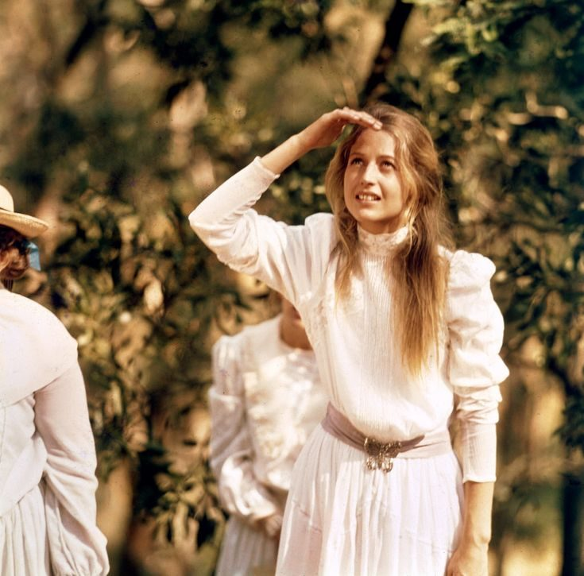
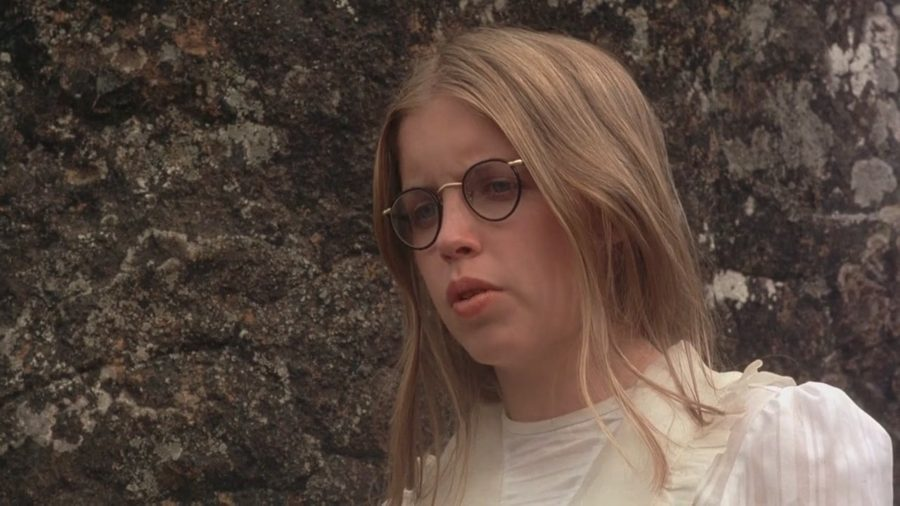
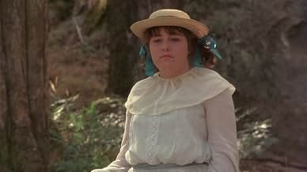
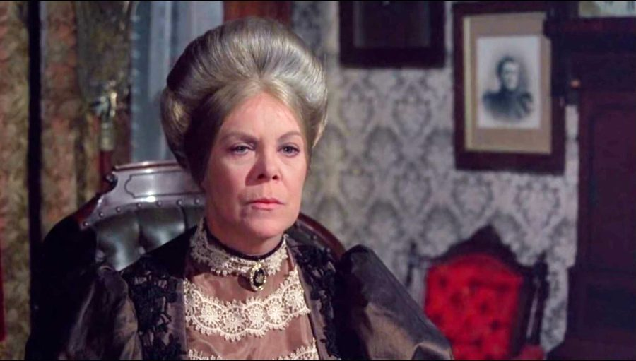
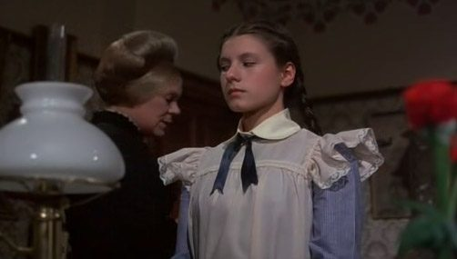
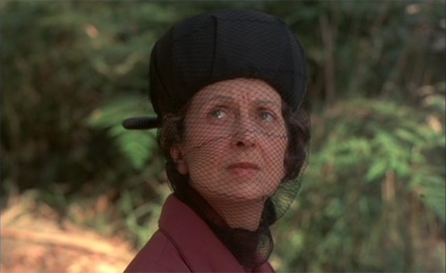
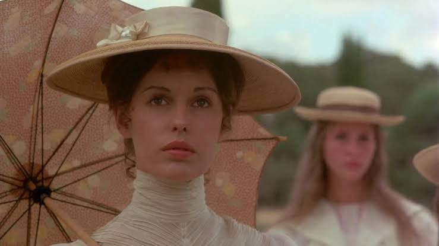
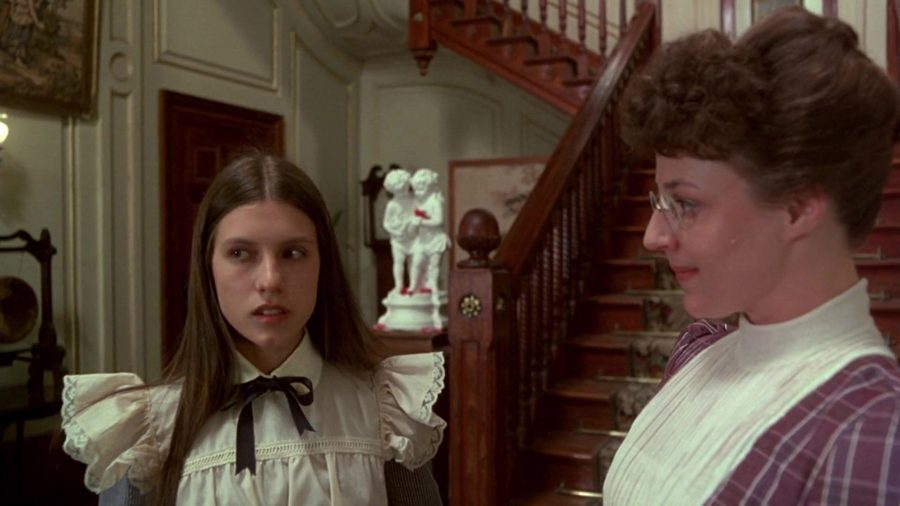
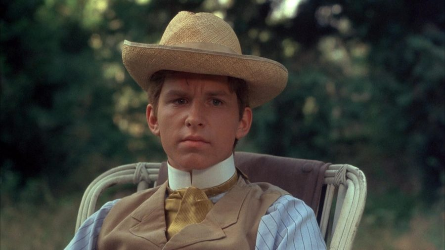
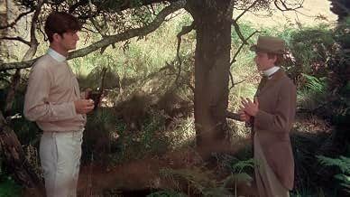

Character Quote Bank
On this page
Miranda

Miranda leads the girls up the Rock and does not return. Beautiful, serene and drawn to the natural world, she is idealised by almost everyone around her.
‘What we see and what we seem are but a dream, a dream within a dream.’ – the film’s opening voice-over.
‘Don’t wear it anymore. Can’t stand the ticking above my heart.’ – rejecting her jewelled watch at the picnic.
‘Everything begins and ends at exactly the right time and place.’ – on top of the Rock, just before she disappears.
‘Someday, Sara, you shall have to come home with me to the station... meet my sweet, funny family for yourself.’ – to Sara on the morning of the picnic.
‘You must learn to love someone else, apart from me.’ – to Sara, as if anticipating her own absence.
‘We shall only be gone a little while.’ – reassuring Mademoiselle as the girls set off to explore.
Marion

Marion is intellectual and detached, taking measurements on the Rock with a protractor. She does not return.
‘I should like to make a few measurements of the rock if we have time.’ – asking permission to explore.
‘I do wish you’d stop talking for once.’ – to Edith during the climb.
‘Whatever can those people be doing down there? Like a lot of ants. Surprising the number of human beings are without purpose.’ – looking down on the picnickers from the Rock.
Irma
Irma is the heiress of the group and the only climbing girl who comes back, with no memory of what happened.
She would wear Miranda’s watch ‘always... even in the bath.’ – at the picnic.
‘Waiting a million years, just for us.’ – awed by the Rock on the journey.
‘We’ll be back long before tea.’ – before the climb.
‘If only we could stay out all night and watch the moon rise.’ – on the Rock.
‘Poor Edith. We’ll go back soon.’ – to Edith before the girls disappear.
Edith

Edith is plump, complaining and frightened. She keeps her hat, gloves, shoes and stockings on, and runs screaming from the Rock.
‘Why can’t we just sit on this log and look at the ugly old rock from here?’ – during the climb.
‘It’s nasty here.’ – as the others are drawn further in.
‘When are we going home?’ – repeatedly, during the climb.
‘It was a cloud... it was red.’ – remembering, when she returns to the Rock with Sergeant Bumpher.
Miss McCraw ‘was funny’ – explaining that she was climbing without her skirt.
The Fitzhuberts ‘might be the only living creatures in the whole world.’ – after the picnic meal.
Mrs Appleyard

The headmistress embodies authority, convention and institutional control. As events slip beyond her control, she unravels.
‘You may remove your gloves once the drag has passed through Woodend.’ – instructions before the picnic.
‘The Rock is extremely dangerous, and you are therefore forbidden any tomboy foolishness in the matter of exploration.’ – warning the girls.
‘Mr Hussey! I shall expect you back, Miss McCraw and Mademoiselle, at about 8.’ – as the drag departs.
‘This makes it worse.’ – chiding Miss Lumley for calling Irma’s discovery ‘wonderful news’.
‘There are several sets of tuition fees impossibly overdue... Sara Waybourne, for instance.’ – as the college faces financial pressure.
‘We shall have to make other arrangements.’ – to Sara, about her unpaid fees.
‘You will be returned to the orphanage.’ – in her final meeting with Sara.
Bournemouth was ‘a delightful place’ where ‘nothing changed – ever.’ – reminiscing with Mademoiselle at dinner.
She had come to ‘depend so much on Greta McCraw’ and her ‘masculine intellect’: ‘How could she allow herself to be spirited away?’ – at the same dinner.
Sara Waybourne

An orphan and ward of the college, Sara is forbidden from the picnic and devoted to Miranda. She is later found dead.
Miranda had many ‘secrets’: ‘she knew she wouldn’t come back.’ – after the disappearance.
At the orphanage she had her head shaved for telling the matron she wanted to be a ‘circus rider’. – confiding in Minnie.
‘This is not a charitable institution.’ – repeating Mrs Appleyard’s words to herself, beneath a painting of a woman holding two babies.
‘I’ve come a long way to see ya, and now I must go.’ – to Albert, in his dream on the night of her death.
Miss McCraw

The mathematics mistress, admired by Mrs Appleyard for her ‘masculine intellect’. She climbs the Rock alone and does not return.
‘Stopped at twelve. Never stopped before. Must be something magnetic.’ – when the watches are found stopped.
The Rock is ‘quite young, geologically speaking.’ – explaining its volcanic origin at the picnic.
‘How foolish can human creatures be.’ – reflecting that the picnickers have come for pleasure to a place of ‘venomous snakes and poisonous ants’.
Mademoiselle de Poitiers

The French mistress is warm, romantic and admired by the students, but increasingly anxious for answers.
‘Now I know... Miranda is a Botticelli angel.’ – watching Miranda.
Irma is ‘prettier than ever.’ – embracing Irma, before questioning her about what she told the police.
Miss Lumley

The junior mistress is timid and fearful of Mrs Appleyard. She eventually resigns.
Irma’s discovery is ‘wonderful news.’ – rebuked by Mrs Appleyard.
Sara is ‘not to go on the picnic.’ – reminding Sara, though she is not going either.
Strapping Sara to the wall is ‘for her own good’, to cure her ‘terrible stooping’. – in the gymnasium.
Michael Fitzhubert

A young English aristocrat visiting his uncle and aunt. He watches the girls cross the stream and becomes obsessed with finding them.
‘I wake up every night in a cold sweat. Just wondering if they’re still alive.’ – to Albert.
The girls ‘may be out there dying of thirst.’ – insisting on searching the Rock himself.
‘It comes back at night in dreams.’ – telling Albert he can’t stop thinking about the Rock.
Albert Crundall

The Fitzhuberts’ groom: earthy, practical and loyal. He finds Irma and, without knowing it, is Sara’s brother.
If ‘the bloody cop and the bloody... tracker and the bloody dog can’t find ‘em, well, no one bloody can.’ – trying to talk Michael out of searching.
He dreams of his ‘kid sister’ on the night of Sara’s death. – telling Michael about the dream.
‘I say the crude things. You just think ‘em.’ – to Michael, at the stream.
The Investigators and the Town
Mr Hussey: ‘No one knows. No one saw her leave. We were asleep.’ – reporting to Mrs Appleyard and Sergeant Bumpher.
Sergeant Bumpher: ‘Was there a man?’ – questioning Edith.
Sergeant Bumpher: ‘As the girls were jumping the creek, what were you thinking of?’ – interviewing Michael, who answers by pointing to a swan vase.
Mrs Bumpher: ‘It couldn’t be local... No one around here would do a thing like that.’ – repeating the town’s gossip.
Mrs Bumpher: ‘People just don’t disappear, my dear. Not without good reason.’ – to her husband, who has no answers.
A townsman: ‘We’ve got a right to know.’ – outside Bumpher’s house after Irma is found.
The doctor: Irma’s unmarked feet are ‘very strange’. – listing her injuries.
The doctor: ‘Remarkable.’ – on Irma surviving a week on the Rock.
Mr Hussey: ‘Well after two, I’d say. We’d better be careful.’ – after his watch stops at the picnic.
The head gardener: ‘There’s some questions got answers, some haven’t.’ – one of the film’s few direct statements of its idea.